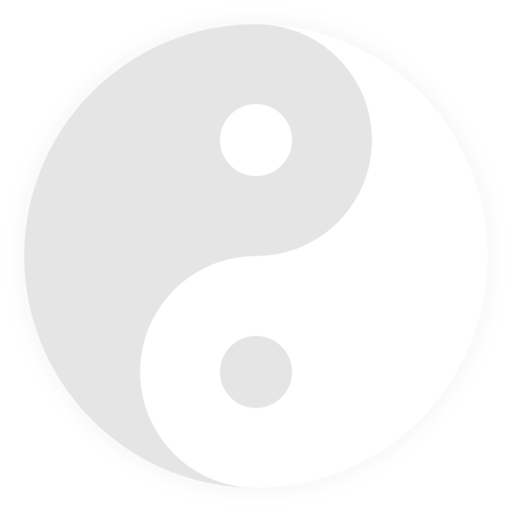
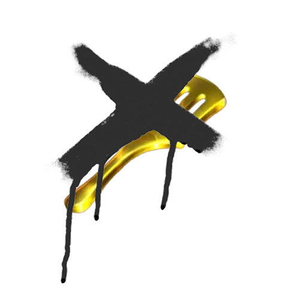
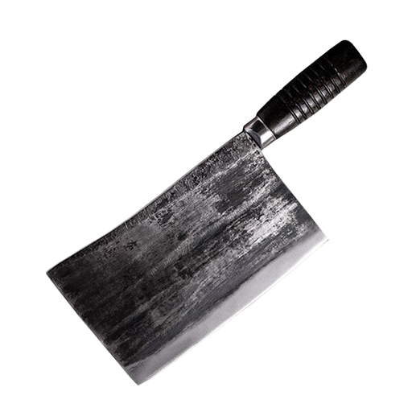
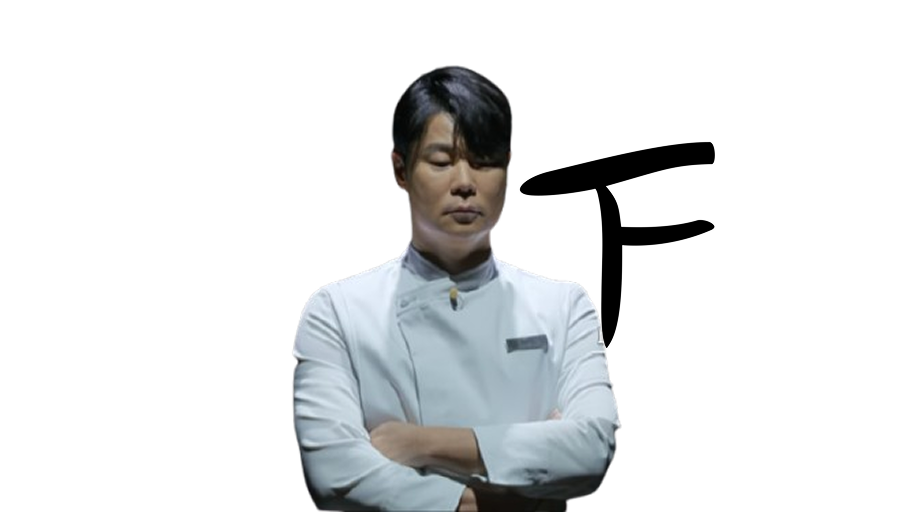
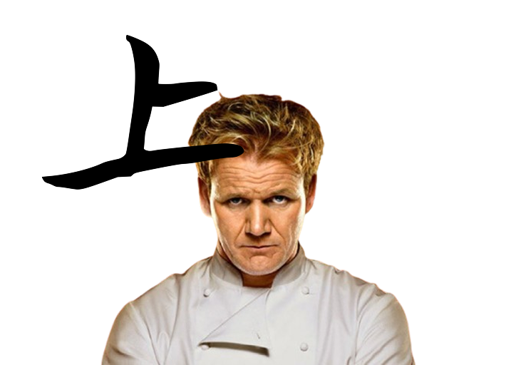

미식왕을 향한 도전
설정
배경음악
50%

효과음
70%
화면 효과



"흑 VS 백"
흑과 백 중 하나를 선택하세요
흑을 고르면, 미슐랭 스타를 획득시
기름의 크기가 커집니다.
기름의 크기가 커집니다.
백을 고르면, 미슐랭 스타를 획득시
기름의 갯수가 많아집니다.
기름의 갯수가 많아집니다.
"흑 VS 백"
원하는 조리도구를 고르세요
웍 (Wok)
황금 팬 (Gold Pan)

황금 뒤집개 (Gold Turner)

나이프 (Knife)
도구를 선택하세요
마우스를 올려서 각 도구의 특성을 확인할 수 있습니다.
"흑 VS 백"
원하는 난이도를 고르세요

쉬움
편안하게 즐길 수 있는
초보자를 위한 난이도
초보자를 위한 난이도
보통
적당한 도전을 원하는
중급자를 위한 난이도
중급자를 위한 난이도

어려움
극한의 도전을 원하는
고수를 위한 난이도
고수를 위한 난이도
게임을 준비하고 있습니다...
LEVEL 1
SCORE: 0
60
🎯 필요한 재료
✅ 수집한 재료
⭐ 미슐랭 스타
0
🎮 선택 효과
-
🔧 조리도구
-
⚡ 난이도
-
게임 일시정지
15초 뒤 다음 스테이지로 이동합니다.

맛있어요. 진짜 맛있어요.
생존하셨습니다.
15초 뒤 다시 도전할 수 있습니다.
이븐하지 않잖아요!
다시 시도해보세요.